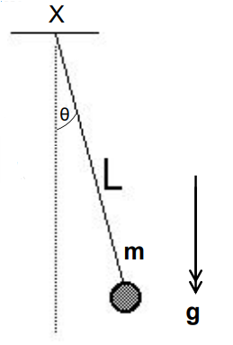
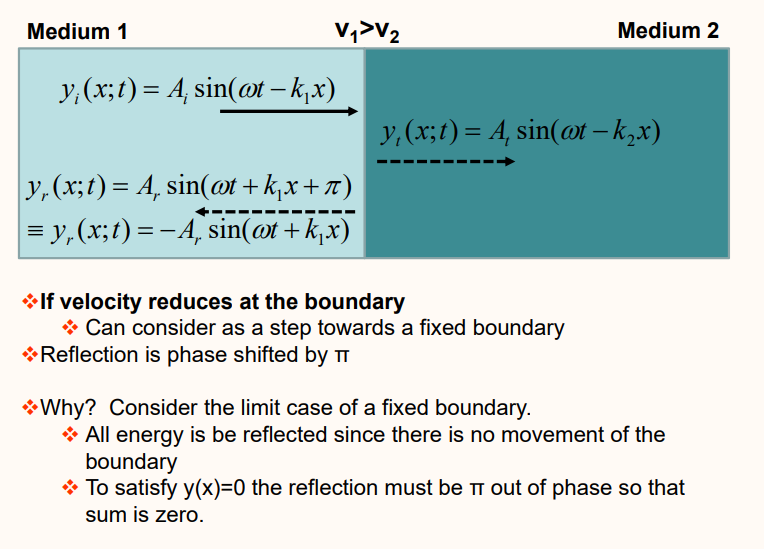
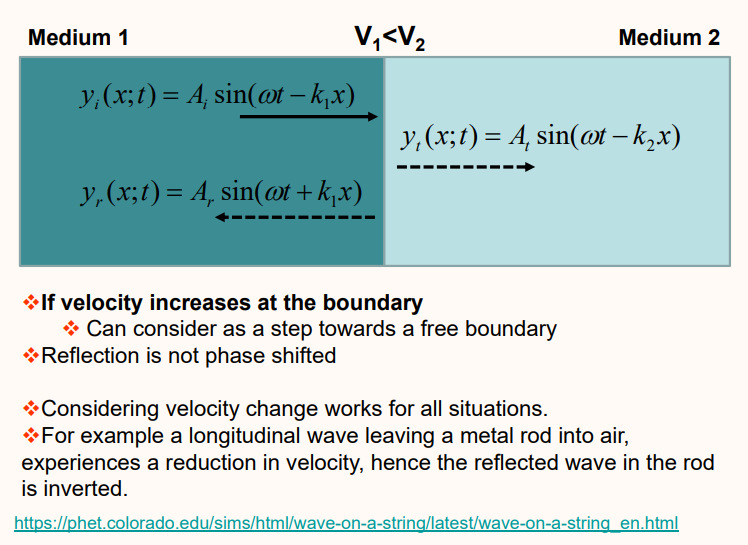
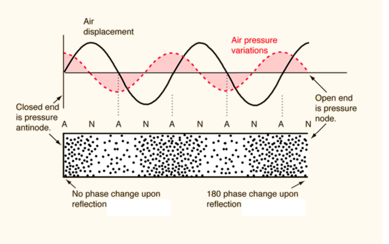
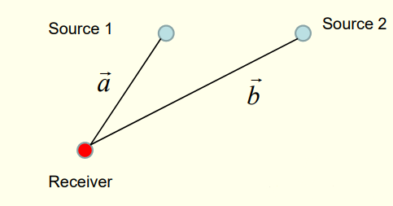
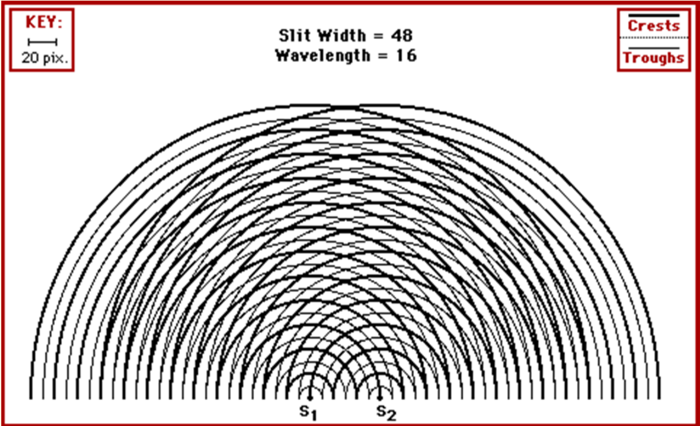
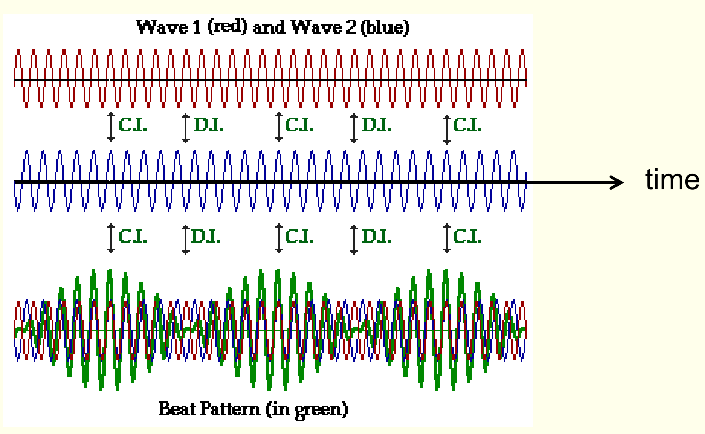

For elastic deformation, stress is proportional to strain. For an ideal spring: \[\mathbf{F}=-k\mathbf{x}\] All materials display a linear dependence of restoring force on displacement for sufficiently small displacements. For some objects, \(F(x)\) is linear over large ranges of strain which is defined as: \[\varepsilon=\frac{\Delta l}{l}\] Springs and elastic or rubber bands can typically be linear for \(\epsilon\leq 2\), and most other materials are linear for \(\epsilon\leq 0.01\).
We can try a solution of the form \(x(t)=A\cos(\omega_0t+\phi_0)\) \[m\ddot{x}=-mA\omega_0^2\cos(\omega_0t+\phi_0)\] \[\implies -kx=-m\omega^2_0x\qquad\&\qquad\omega_0=\sqrt{\frac{k}{m}}\] The energy stored in this spring is the following: \[E=\frac{1}{2}mv^2+\frac{1}{2}kx^2=\frac{1}{2}kA^2\]
Consider a rigid body with moment of inertia \(I\) about some axis connected to a spring or suspended from a fibre.
The equation of motion is given by: \[-\kappa\theta=I\frac{d^2\theta}{dt^2}\] The form of this equation is the same as for a mass on a spring. So we are dealing with a form of angular SHM. The angular frequency \(\omega_0\) and frequency \(f\) are given by: \[\omega_0=\sqrt{\frac{\kappa}{I}}\qquad:\qquad f=\frac{\omega_0}{2\pi}\] Motion described by: \(\theta(t)=\Theta\cos(\omega_0t+\phi_0)\) Note: \(\omega_0\neq d\theta/dt\), as it is oscillating sinusoidally.
A solution to the equation of motion assuming damping force is linear with respect to velocity is: \[x(t)=Ae^{\frac{-b}{2m}t}\cos(\omega't+\phi)\] ...where \(b\) is the damping term and is small and \(w'\) (The new angular velocity is): \[\omega'=\sqrt{\omega^2-\frac{b^2}{4m^2}}=\sqrt{\frac{k}{m}-\frac{b^2}{4m^2}}\] A system is critically-damped if \(b=2\sqrt{km}\), under-damped if less, or over-damped if more.
The equation of motion in a forced oscillation is: \[x(t)=A\sin(\omega_dt+\delta)\] where \(\omega_d\) is the driving frequency The amplitude of an oscillator driven by a sinusoidally varying force is: \[A=\frac{F_0}{\sqrt{(k-m\omega_d^2)^2+b^2\omega_d^2}}\]
A simple pendulum consists of a small finite sized mass supported on a weightless string or rod. One external force, gravity, acts vertically downwards and the tension in the string supports the mass. The mass moves in a circular arc, radius L around the pivot point X.

If \(\theta\) is small, \(\implies mg\sin\theta\approx mg\theta\) Equation of motion: \[L\frac{d^2\theta}{dt^2}=-g\theta\] ...with solution \[\theta(t)=A\cos(\omega_0t+\phi_0)\] Natural frequency: \[\omega_0=\sqrt{\frac{g}{L}}\]
Equation of motion: \[\frac{d^2\theta}{dt^2}=-\frac{mgL_{cm}}{I}\theta\] ...with solution \[\theta(t)=\Theta\cos(\omega_0t+\phi_0)\] Natural frequency: \[\omega_0=\sqrt{\frac{mgL_{cm}}{I}}\]
String: Tension: \(T\), mass per unit length: \(\mu\) \[v=\sqrt{\frac{T}{\mu}}\] Bulk Material: Bulk modulus: \(B\), density: \(\rho\) \[v=\sqrt{\frac{B}{\rho}}\] Rod: Youngs modulus: \(Y\), density: \(\rho\) \[v=\sqrt{\frac{Y}{\rho}}\]
A wave travelling to the right (change sign of \(kx\) to change direction) is expressed as: \[y(x,t)=A\sin(\omega t-kx)\] Where \(k\) is the wave number: \[k=\frac{2\pi}{\lambda}\] The velocity of the wave is: \[v=f\lambda=\frac{\omega}{k}\]
Particles of the medium (e.g. rope) move back and forth as the wave propagates. Particle velocity at a fixed position \(x\) is the derivative of \(y\) at that position with respect to time. \[\left(\frac{\partial y}{\partial t}\right)=A\omega\cos(\omega t-kx)\] We can use this to derive the Wave Equation: \[\frac{\partial^2y}{\partial t^2}=v^2\frac{\partial^2y}{\partial x^2}\]
A fixed end will invert the wave, whereas a free end will mirror the wave back as it came to the end. Advanced stuff:


When two wave functions overlap the resulting displacement is just the algebraic sum of the individual displacements: \[y(x,t)=y_1(x,t)+y_2(x,t)\]
Trigonometry simplifies the result to two waves travelling opposite directions: \[y(x,t)=2A\sin(\omega t+\phi_1)\cos(kx+\phi_2)\] Positions with zero displacement at all times = ‘Nodes’ Positions where SHM has maximum amplitude = ‘Antinodes’ From A Level, it is clear that: \[\lambda_n=\frac{2L}{n}\] hence, \[k=\frac{2\pi}{\lambda}=\frac{\pi n}{L}\] Different modes (overtones) are calculated with the following formula: \[f_n=\frac{nv}{2L}=nf_1\] When on a string: \[f_n=\frac{n}{2L}\sqrt{\frac{T}{\mu}}\]

Path difference (\(d\)) is given by: \[d=\left||\mathbf{a}|-|\mathbf{b}|\right|\] from the following diagram:

If \(d=n\lambda\), full constructive interference if \(d=n\lambda/2\), full destructive interference
2D Interference:

Beats are another common example of interference. Consider two overlapping waves with slightly different frequencies. The phase difference varies with position, and so does the amplitude, as before…

Consider two travelling sound waves of equal amplitude \[y_1=A\sin(\omega_1t-k_1x)\qquad\qquad y_2=A\sin(\omega_2t-k_2x)\] Simplify algebra by choosing \(x=0\) (doesn’t affect conclusion), Resultant motion is: \[\begin{align} &y=A\sin(\omega_1t)+A\sin(\omega_2t)\\ &\implies y=2A\sin\left(\frac{\omega_1+\omega_2}{2}t\right)\cos\left(\frac{\omega_1-\omega_2}{2}t\right)\\ &\omega_a=\frac{\omega_1+\omega_2}{2}\qquad\qquad\omega_d=\frac{\omega_1-\omega_2}{2}\\ &\implies y=2A\sin(\omega_at)\cos(\omega_dt)\;\;(x=0) \end{align}\] ...A wave with frequency \(\omega_a\) and modulating amplitude \(2A\cos( \omega_dt)\) Perceived sound has average frequency \(f_a\), with an amplitude slowly varying at frequency \(f_d\). Loudness varies at frequency \(2f_d\) = the beat frequency \(f_b\): \[f_b=2f_d=f_1-f_2\]
Source emits frequency \(f_s\) and moves with speed \(v_s\) relative to the air directly towards listener. The listener hears frequency \(f_L\) and moves with speed \(v_L\) relative to the air directly towards source. Speed of sound in still air is \(v\): \[f_L=f_s\left(\frac{v\pm v_L}{v\mp v_s}\right)\] Note:
There is also a Doppler effect for electromagnetic waves travelling in a vacuum. Here there is no medium and so the effect depends only on the relative motion of the source with respect to the receiver. The frequency detected at the receiver, \(f_r\), is related to the frequency emitted at the source, \(f_s\), by: \[f_r=\sqrt{\frac{c\pm v}{c\mp v}}f_s\] Where \(v\) is the relative speed and \(c\) is the speed of light in a vacuum. If the listener and source are approaching we use \(+\) in the numerator and \(–\) in the denominator. If the listener and source are receding we use \(–\) in the numerator and \(+\) in the denominator. The frequency detected at the receiver, \(f_r\), is related to the frequency emitted at the source, \(f_s\), by: \[\frac{\lambda_r}{\lambda_s}=\frac{f_s}{f_r}\]
A cone of constructive interference forms: \[\sin\theta=\frac{v}{v_{source}}\] The Mach number (\(M\)) is: \[M=\frac{v_{source}}{v}\]
\[P(x,t)=\sqrt{\mu T}\omega^2A^2\cos^2(\omega t-kx)\]